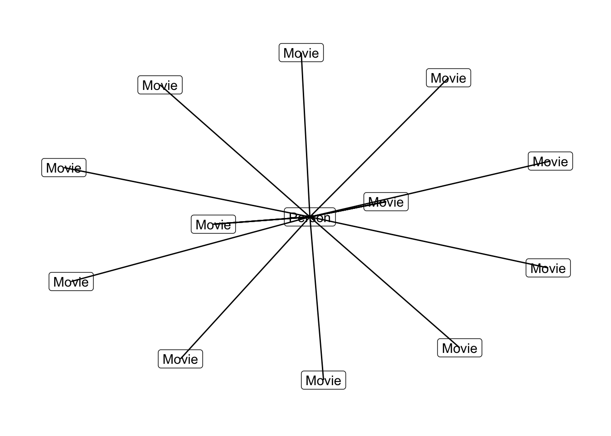

Chapter 6 Convert for common graph packages
6.1 {igraph}
In order to be converted into a graph object:
The nodes should be a dataframe with the first column being a series of unique ID, understood as “names” by igraph - these are the ID columns from Neo4J. Other columns are considered attributes.
relationships need a start and an end, i.e. startNode and endNode in the Neo4J results.
Here how to create a graph object from a {neo4r} result:
G <-"MATCH a=(p:Person {name: 'Tom Hanks'})-[r:ACTED_IN]->(m:Movie) RETURN a;" %>%
call_neo4j(con, type = "graph")
library(dplyr)##
## Attaching package: 'dplyr'## The following objects are masked from 'package:stats':
##
## filter, lag## The following objects are masked from 'package:base':
##
## intersect, setdiff, setequal, unionlibrary(purrr)##
## Attaching package: 'purrr'## The following object is masked from 'package:magrittr':
##
## set_names# Create a dataframe with col 1 being the ID,
# And columns 2 being the names
G$nodes <- G$nodes %>%
unnest_nodes(what = "properties") %>%
# We're extracting the first label of each node, but
# this column can also be removed if not needed
mutate(label = map_chr(label, 1))
head(G$nodes)## # A tibble: 6 x 7
## id label tagline title released born name
## <chr> <chr> <chr> <chr> <int> <int> <chr>
## 1 144 Movie Houston, we have a proble… Apollo 13 1995 NA <NA>
## 2 71 Person <NA> <NA> NA 1956 Tom H…
## 3 67 Movie At odds in life... in lov… Youve Go… 1998 NA <NA>
## 4 162 Movie Once in a lifetime you ge… A League… 1992 NA <NA>
## 5 78 Movie A story of love, lava and… Joe Vers… 1990 NA <NA>
## 6 85 Movie In every life there comes… That Thi… 1996 NA <NA>We then reorder the relationnship table:
G$relationships <- G$relationships %>%
unnest_relationships() %>%
select(startNode, endNode, type, everything())
head(G$relationships)## # A tibble: 6 x 5
## startNode endNode type id roles
## <chr> <chr> <chr> <chr> <list>
## 1 71 144 ACTED_IN 202 <chr [1]>
## 2 71 67 ACTED_IN 84 <chr [1]>
## 3 71 162 ACTED_IN 234 <chr [1]>
## 4 71 78 ACTED_IN 98 <chr [1]>
## 5 71 85 ACTED_IN 110 <chr [1]>
## 6 71 111 ACTED_IN 146 <chr [1]>graph_object <- igraph::graph_from_data_frame(
d = G$relationships,
directed = TRUE,
vertices = G$nodes
)
plot(graph_object)
This can also be used with {ggraph} :
library(ggraph)## Loading required package: ggplot2graph_object %>%
ggraph() +
geom_node_label(aes(label = label)) +
geom_edge_link() +
theme_graph()## Using `nicely` as default layout
6.2 {visNetwork}
{visNetwork} expects the following format :
6.2.1 nodes
- “id” : id of the node, needed in edges information
- “label” : label of the node
- “group” : group of the node. Groups can be configure with visGroups
- “value” : size of the node
- “title” : tooltip of the node
6.2.2 edges
- “from” : node id of begin of the edge
- “to” : node id of end of the edge
- “label” : label of the edge
- “value” : size of the node
- “title” : tooltip of the node
(from ?visNetwork::visNetwork).
visNetwork is smart enough to transform a list column into several label, so we don’t have to worry too much about this one.
Here’s how to convert our {neo4r} result:
G <-"MATCH a=(p:Person {name: 'Tom Hanks'})-[r:ACTED_IN]->(m:Movie) RETURN a;" %>%
call_neo4j(con, type = "graph")
# We'll just unnest the properties
G$nodes <- G$nodes %>%
unnest_nodes(what = "properties")
head(G$nodes)
# Turn the relationships :
G$relationships <- G$relationships %>%
unnest_relationships() %>%
select(from = startNode, to = endNode, label = type)
head(G$relationships)
visNetwork::visNetwork(G$nodes, G$relationships)